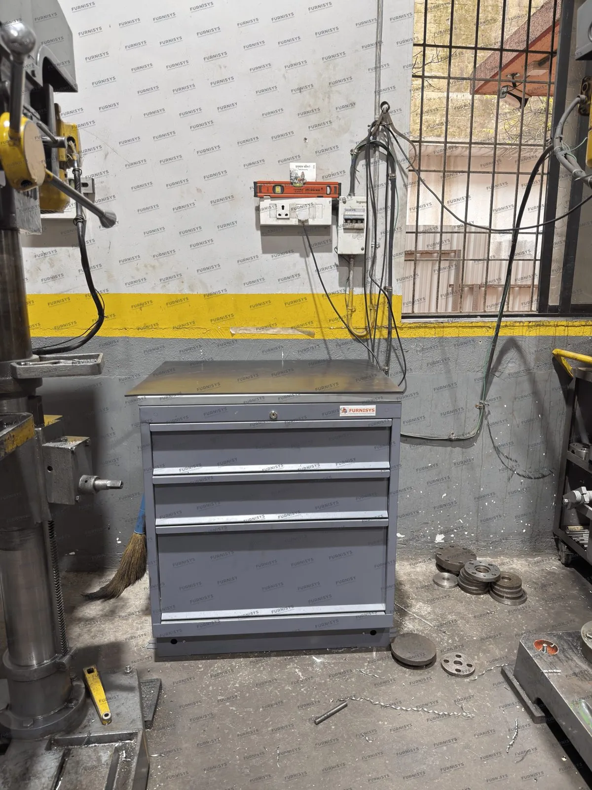
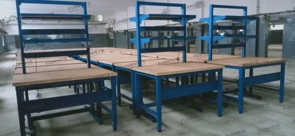
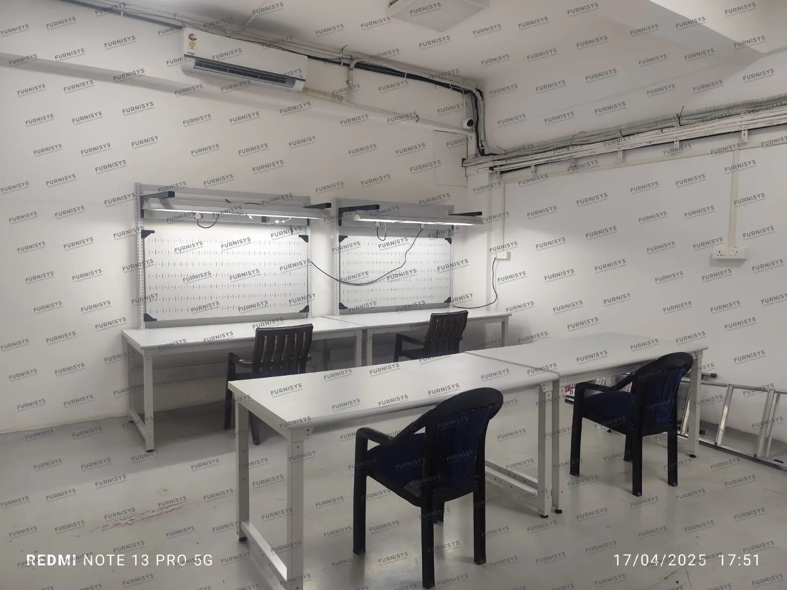

Workbench for Material Testing
Creating Efficiency in Pneumatic Pump Assembly
A well-structured Pump Assembly Area is essential for precision, safety, and speed. In pneumatic equipment manufacturing, every step of the assembly process demands accuracy. However, outdated or cluttered setups often cause delays, operator fatigue, and reduced efficiency.
Our client faced these challenges with their existing assembly space,

Worn-out tables

Scattered tools

Poor workflow
Worn-out tables, Scattered tools, and Poor workflow design were slowing down production. They needed a reliable solution: durable, modular workstations designed specifically for the pneumatic Pump Assembly Area.
The Need for Organized Workstations
The assembly of pneumatic pumps requires dedicated work surfaces, tool storage, and seamless integration with inline assembly systems. Each station must not only provide stability but also simplify the movement of parts and minimize technician effort.

To address this, Furnisys conducted a complete site evaluation. Our team measured the space, analyzed tool usage, and developed 2D and 3D layouts to reimagine how the Pump Assembly Area could function. The goal was clear, design a structured environment that supports productivity, safety, and long-term durability.
Furnisys Solution:
Modular Workstations for Pump Assembly
After analyzing the client’s requirements, we proposed Scitec modular workstations with configured features to support precise pneumatic pump assembly. To make planning easier, a 3D visualization of the assembly floor was created. This allowed the client to see how tools, components, and technicians would move seamlessly across the area.
The final workstation design emphasized:
Optimized Accessibility
Tools and parts within reach.
Reduced Operator Movement
Less wasted time, smoother workflow.
Clear Segregation of Tasks
Defined zones for different assembly stages.
Improved Productivity
Faster completion with minimal downtime.
Key Features
Pump Assembly Area Workstations

Pegboards and Tool Holders
Every workstation was fitted with pegboards and dedicated holders for Allen keys, spanners, and screwdrivers. This ensured tools were visible, accessible, and always returned to the right place.

Rubber Mat and Tool Rail
Workbenches were equipped with rubber mats to prevent loose components from rolling and to reduce surface wear. Tool rails kept frequently used items neatly arranged and within arm’s reach.

Integrated Power Rails
Horizontal power rails provided centralized access to pneumatic tools and cordless drivers. This eliminated the need for messy extension cords, improving both efficiency and safety.

Mounting for Bench Vises
Each workstation included provisions for bench vises to secure pneumatic components during assembly and testing, enhancing precision and versatility.
Results: A Modern Pump Assembly Area
The transformation of the Pump Assembly Area was clear. Technicians experienced:
Faster access to tools and parts.
Safer, clutter-free assembly surfaces.
Improved ergonomics with reduced strain and movement.
A consistent, reliable workflow that boosted output.
Most importantly, the modular workstation design ensures adaptability. As new pump models or updated assembly stages are introduced, the setup can evolve without disrupting production.
Why Choose Furnisys for Pump Assembly Workstations?
Furnisys specializes in configured modular workstations that align with the exact needs of industrial assembly processes. With a focus on ergonomics, durability, and workflow efficiency, our solutions help manufacturers create structured environments where precision work thrives.
Whether you’re upgrading an existing Pump Assembly Area or setting up a new one, our tailored workstation designs bring order, safety, and long-term reliability to your operations.